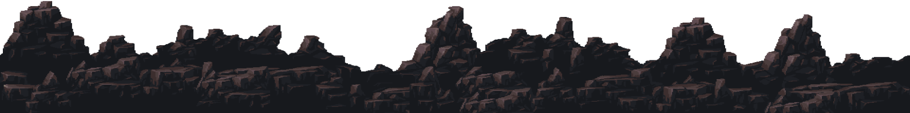

desenvolvido por @ellenmariadev
A mAsmorrA dA colinA
EM BUSCA DE PAZ E TRANQUILIDADE LONGE DO AGITO DA CIDADE GRANDE... SANDY, CLINT E BRUNA DECIDEM VISITAR O VALE DO ORVALHO, UMA PEQUENA VILA NO NORTE DA ISLÂNDIA. A VILA É CALMA E SILENCIOSA, DO JEITO QUE QUERIAM. NO ENTANTO, OS TRÊS AMIGOS CRUZAM O CAMINHO DE UM ESTRANHO HABITANTE QUE ACABA ROUBANDO O COLAR DA SANDY. E O QUE ERA PARA SER UM FINAL DE SEMANA TRANQUILO ENTRE AMIGOS VIRA UMA AVENTURA ATERRORIZANTE.
JOGAR 